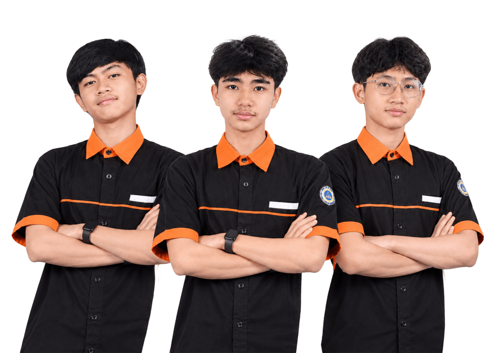
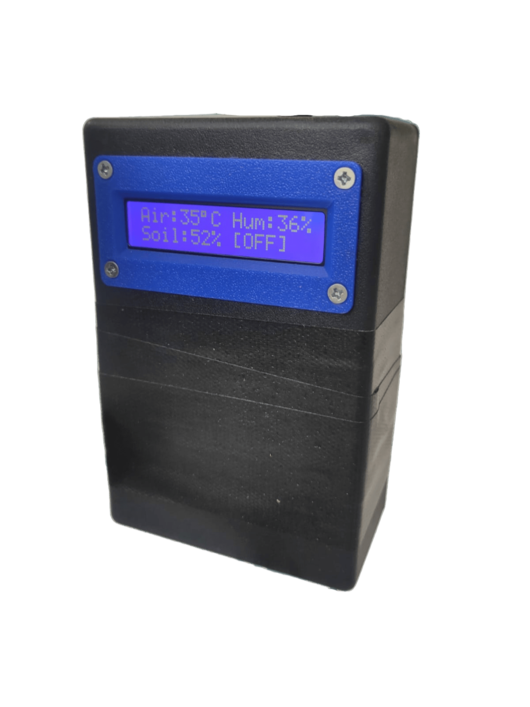
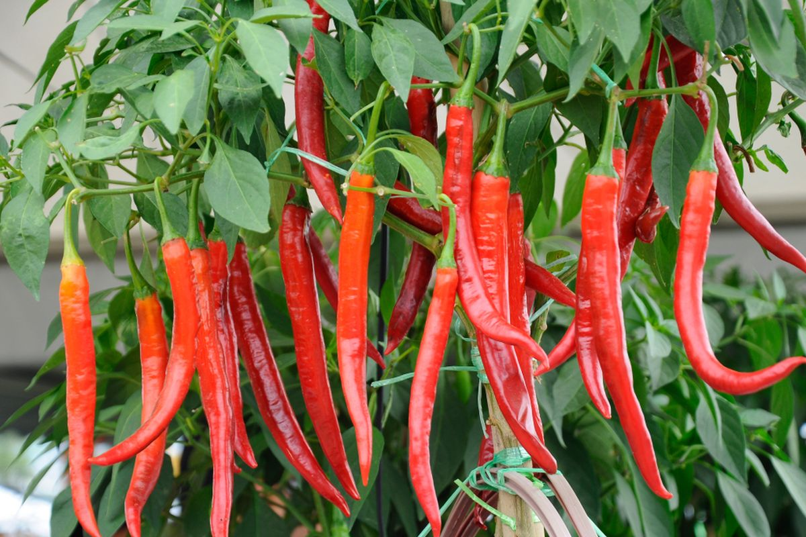
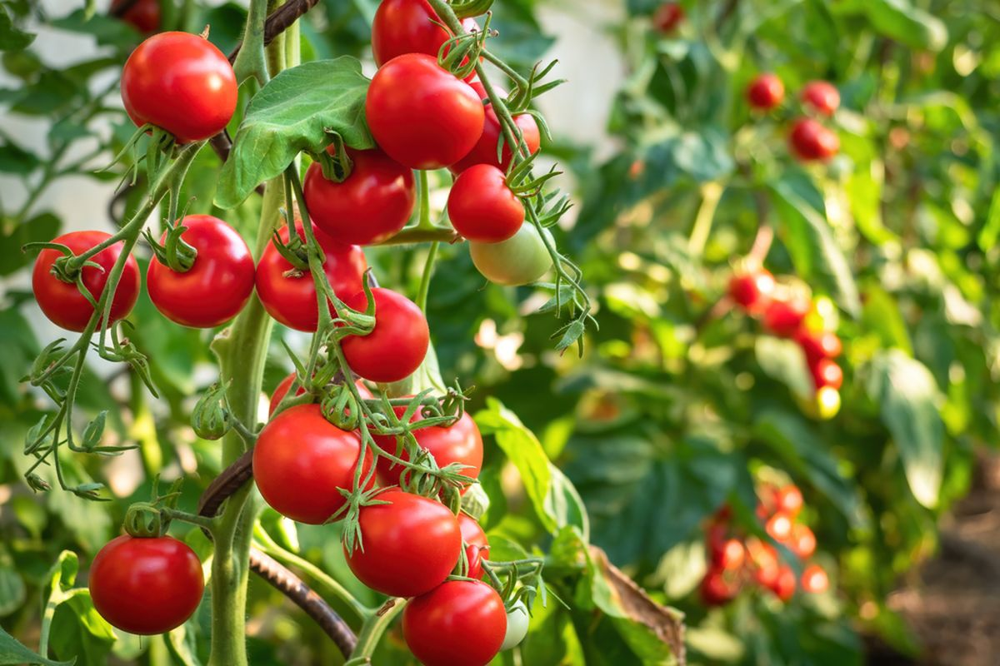

Tim Pengembang
Proyek ini dikembangkan oleh Edsel, Fidel, dan Rasya,
siswa jurusan TJKT dari SMK Informatika Al-Irsyad Al-Islamiyyah Cirebon.
Smart Mini Garden IoT
Sistem ini memanfaatkan teknologi Internet of Things (IoT) berbasis mikrokontroler NodeMCU. Perangkat sensor memantau tingkat kelembapan tanah secara real-time dan mengaktifkan pompa air secara otomatis untuk menjaga kesuburan tanaman secara efisien.

Komoditas Tanaman Unggulan
Klik tombol pada gambar tanaman untuk melihat informasi lengkap.

Tanaman Cabai
Kelembapan StabilCabai membutuhkan suplai air yang konsisten agar pertumbuhan akar maksimal, bunga tidak mudah rontok, dan terhindar dari risiko busuk akar.

Tanaman Tomat
Sensitif Kadar AirTomat sangat peka terhadap fluktuasi kekeringan tanah. Sistem otomatis menjaga kadar air tanah di rentang ideal agar buah tumbuh segar dan manis.
Server Blynk Cloud (Token Permanen Aktif)
Live Monitoring Sensor
Pembaruan otomatis tiap 1 detikKelembapan Udara
-- %
Lingkungan sekitar
Suhu Udara
-- °C
Pengukuran sensor
Kelembapan Tanah
-- %
Capacitive soil moisture
Status Pompa
MENUNGGU
Penyiraman otomatis